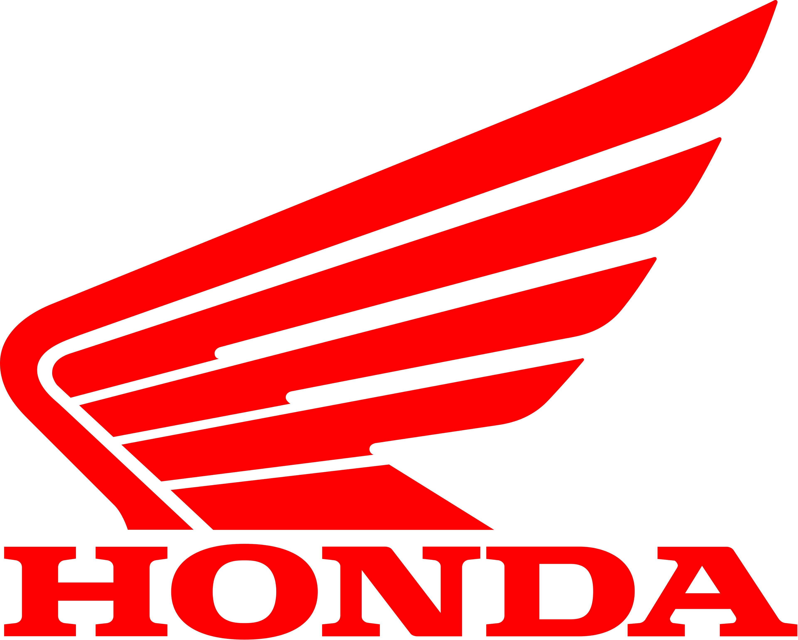
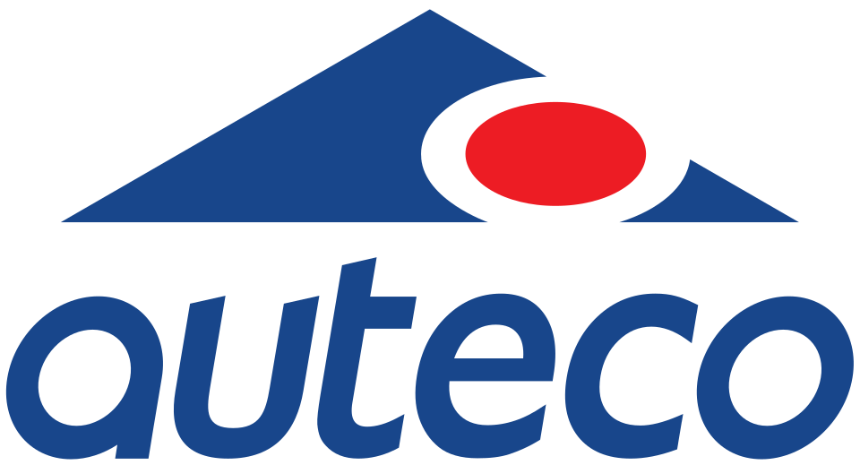

Mantenimiento mecánico preventivo y correctivo de todo tipo de motocicletas. Ajuste de sistemas de lubricación, refrigeración, alineación, frenos, suspensión, dirección y componentes afines.
Sistemas de transmisión de movimiento: cajas de velocidad, embragues, kit de arrastre o cardán. Alineación de chasis, tren delantero, reparación de tijeras y restauración por corrosión.
Servicio profesional de soldadura eléctrica, autógena y oxicorte. Contamos con equipos para el perfecto diagnóstico de sistemas electrónicos en motos, scooters, minimotos y cuatrimotos.
Desbloqueos, configuraciones y ajustes básicos. Mantenimiento preventivo y correctivo de todo el sistema eléctrico: corriente continua, corriente alterna, encendido magnético y cableados.
Servicio de pintura en general para piezas expuestas a altas temperaturas. Diseños personalizados con excelente acabado, alta dureza y resistencia. Decoración, emblemas, lujos y accesorios.
Reparación de fallas eléctricas, llantería y cerrajería a domicilio. Diagnosticamos su moto en calle, vivienda o trabajo, gestionando el traslado directo hacia nuestro taller si se requiere.


Abrimos tu carro o moto sin dañar la cerradura, con herramientas especializadas.
Copiamos llaves para vehículos, motos, inmuebles y seguros de alta seguridad.
Servicio rápido de apertura sin daños para puertas y cerraduras de cualquier tipo.
Llegamos al lugar donde estés. Atendemos emergencias en Barranquilla y alrededores.
COTIZA AHORA605 302 8587
605 352 4816
Disponible las 24 horas del día, los 7 días de la semana